Zurich University of the Arts · Immersive Arts Space
What Escapes the Model? The Limits of Formalisation in AI
October 29, 2026 – Zürich, Switzerland
For a Critical Formalism after Machine Learning
2012/2014
2024/2026
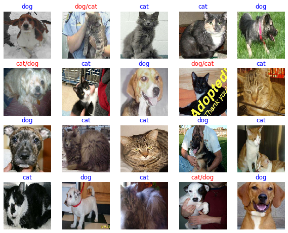
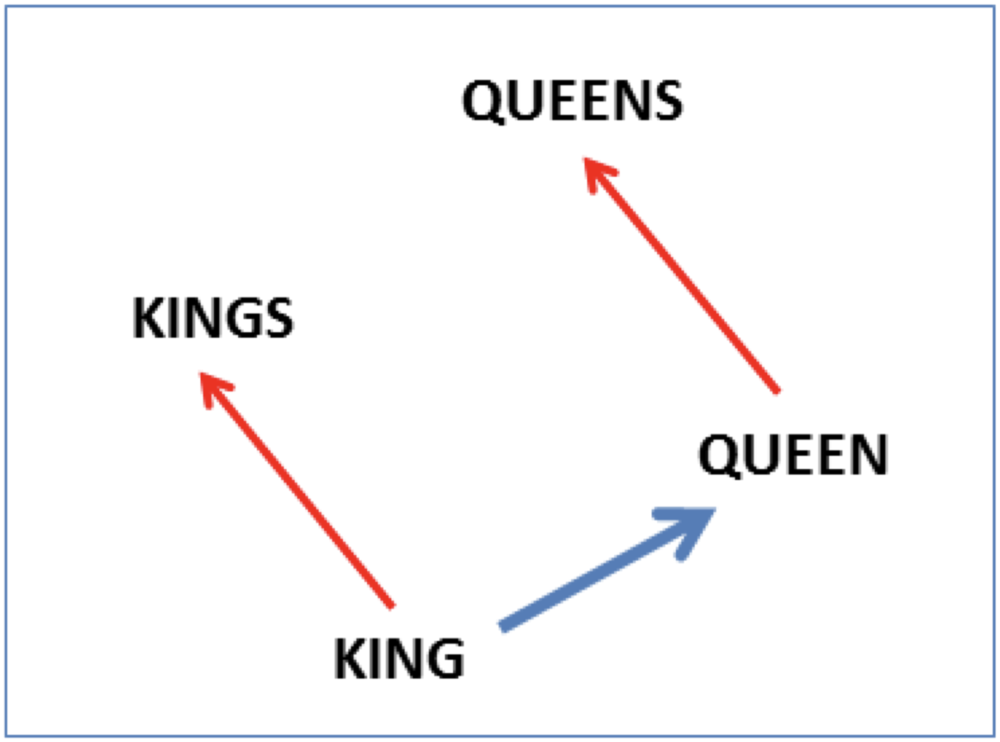
🤖🧠
LLMs have a relation
to natural language,
therefore they are like us
📉🦜
LLMs are not like us,
therefore they do not
and can not have any
relation to natural language
Kirschenbaum (2023):
Bender et al.’s (2021) paper “offers a disarmingly linear account of how language, communication, intention, and meaning work, one that would seem to sidestep decades of scholarship around these same issues in literary theory […] the passage would be red meat for a graduate critical-theory seminar.”
Underwood (2023):
“The beautiful irony of this situation […] is that a generation of humanists trained on Foucault have now rallied around ‘On the Dangers of Stochastic Parrots’ to oppose a theory of language that their own disciplines invented, just at the moment when computer scientists are reluctantly beginning to accept it.”
Anti-dogmaticity
Knowledge does not bear on substances,
but on phenomena
Conditionality
Knowledge is not absolute,
but relative to very precise conditions
Limitedness
The legitimacy of knowledge is not unbounded,
but circumscribed within fairly precise limits
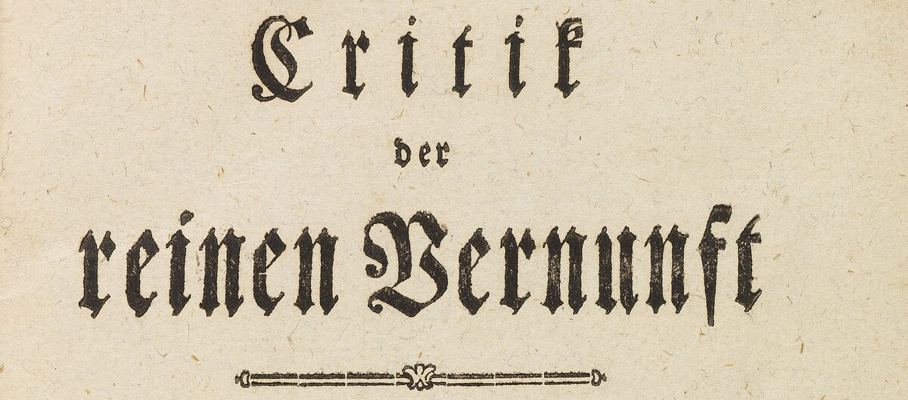
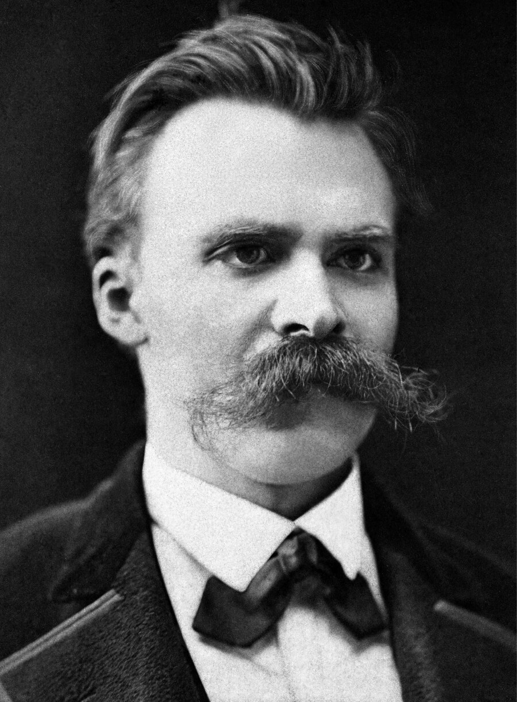
“In some remote corner of the universe, flickering in the light of the countless solar systems into which it had been poured, there was once a planet on which clever animals invented cognition. It was the most arrogant and most mendacious minute in the ‘history of the world’…”
On Truth and Lying in a Non-Moral Sense (Nietzsche, 1873)
Knowledge is ineluctably conditioned by languageembodiment
(Epistemological)
Language is arbitrary
Any regularity in languagebodies and knowledge is political
(Political)
Language is arbitrary
We must resist inherited (linguisticembodied and cognitive) regularities and create new ones
(Aesthetic)
Anti-dogmaticity
The divorce between knowledge and substances is pushed to the extreme
Conditionality
Conditions become maximally local
Limitedness
The search for alternative grounds turns from a possibility into a duty
Knowledge is ineluctably conditioned by language
(Epistemological)
Language is arbitrary?
Any regularity in language and knowledge is political
(Political)
Language is arbitrary?
We must resist inherited (linguistic and cognitive) regularities and create new ones
(Aesthetic)
Logical Syntax of Language
(1934)
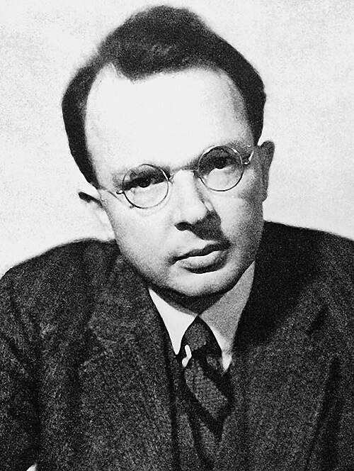
Logic
↓
Semantics
Information Theory
(1948)
Mathematics
↓
Pragmatics
Generative Linguistics
(1957)
Computer Science
↓
Syntax
Formal vs. Arbitrary
Formal vs. Material
Formal vs. Historical
FormalNatural
Formal vs. Arbitrary
Formal vs. Material
Formal vs. Historical
Arbitrary vs. Formal
Material vs. Formal
Historical vs. Formal
ArbitraryMaterialHistoricalCultural
“their eyes merely glide across the surface of things and see ‘forms’; nowhere does their perception lead into truth; instead it is content to receive stimuli and, as it were, to play with its fingers on the back of things.”
“…the great edifice of concepts exhibits the rigid regularity of a Roman columbarium, while logic breathes out that air of severity and coolness which is peculiar to mathematics.”
“…the only things we really know about them [the laws of nature] are things which we bring to bear on them: time and space, in other words, relations of succession and number.”
Resists formalization Automated
Chess programs have stalled
(Dreyfus, 1965) ⟶ Mac Hack beats Dreyfus (1967)
Deep Blue beats Kasparov (1997)
Go is out of reach ⟶ AlphaGo beats Lee Sedol (2016)
Winograd Schema Challenge
(Levesque et al., 2012) ⟶ “The Defeat of the Winograd Schema Challenge”
(Kocijan et al., 2023)
… ⟶ …
Empirical limits are overcome as soon as they are set
not by formalization, but by automation
Embodied and materialist critique Current AI
Know-how is tacit, not rules
(Dreyfus, 1972; Polanyi, 1966) ⟶ No rules, only weights
Intelligence needs no representations
(Brooks, 1991; Varela et al., 1991) ⟶ Distributed, sub-symbolic activations
Skills come from immersion and practice
(Dreyfus & Dreyfus, 1988) ⟶ Learning from data, not specification
Action answers the whole situation
(Suchman, 1987) ⟶ Extreme context sensitivity
Knowing is doing
(Barad, 2007) ⟶ Performance taken as competence
Matter, not form, acts
(Bennett, 2010) ⟶ Compute, energy, data at scale
AI is not formalization, but automation disguised as science
Formalization is the one thing AI models miss
Neural LM
❓
🧠❓
🤖❓
🦜❓
💻❓
🗺️❓
\(f\)❗
Computable
Function
\(f\colon \mathbb{R}^n \overset{f_1}{\longrightarrow} \mathbb{R}^{n_1} \overset{f_2}{\longrightarrow}\cdots \overset{f_K}{\longrightarrow} \mathbb{R}^{n_K} \overset{g}{\longrightarrow}\mathbb{R}^m\)
Computable
Function
\(f\colon \mathbb{R}^n \overset{f_1}{\longrightarrow} \mathbb{R}^{n_1} \overset{f_2}{\longrightarrow}\cdots \overset{f_K}{\longrightarrow} \mathbb{R}^{n_K} \overset{g}{\longrightarrow}\mathbb{R}^m\)
Turing
Machine
(Turing, 1937)
Recursive
Function
(Gödel, 1934/1986)
Lambda
Term
(Church, 1936)
\(\Longleftrightarrow\)
\(\Longleftrightarrow\)
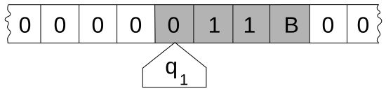
credit: Nynexman4464\(\lambda m . \lambda n . \lambda f . \lambda x . m f ( n f x)\)
\(P := {\color{blue}{\lambda m . \lambda n . \lambda f . \lambda x . m f ( n f x)}}\)
\(P' := {\color{#00a0c0}{\lambda r . \lambda s .\lambda f . \lambda x . f(f(f(f(fx))))}}\)
| \(0\): | \(\lambda f . \lambda x . x\) |
| \(1\): | \(\lambda f . \lambda x . fx\) |
| \(2\): | \({\color{orange}{\lambda f . \lambda x . f(fx)}}\) |
| \(3\): | \({\color{green}{\lambda f . \lambda x . f(f(fx))}}\) |
| \(4\): | \(\lambda f . \lambda x . f(f(f(fx)))\) |
| \(5\): | \({\color{red}{\lambda f . \lambda x . f(f(f(f(fx))))}}\) |
| \(\ldots\) | |
| \(n\): | \(\lambda f . \lambda x .\underbrace{f(\ldots(f}_{n \text{ times}}x)\ldots)\) |
\({\color{blue}{\lambda m . \lambda n . \lambda f . \lambda x . m f ( n f x)}}\,{\color{orange}{(\lambda f . \lambda x . f(fx))}}\,{\color{green}{(\lambda f . \lambda x . f(f(fx)))}}\)
\({\color{#00a0c0}{\lambda r . \lambda s .\lambda f . \lambda x . f(f(f(f(fx))))}}\,{\color{orange}{(\lambda f . \lambda x . f(fx))}}\,{\color{green}{(\lambda f . \lambda x . f(f(fx)))}}\)
\(\rightsquigarrow\)
\(\rightsquigarrow\)
\(\rightsquigarrow\)
\(\rightsquigarrow\)
\(\rightsquigarrow\)
\(\rightsquigarrow\)
\({\color{red}{\lambda f . \lambda x . f(f(f(f(fx))))}}\)
\(P :={\color{blue}{\lambda m . \lambda n . \lambda f . \lambda x . m f ( n f x)}}\)
\(P' := {\color{#00a0c0}{\lambda r . \lambda s .\lambda f . \lambda x . f(f(f(f(fx))))}}\)
| \(0\): | \(\lambda f . \lambda x . x\) |
| \(1\): | \(\lambda f . \lambda x . fx\) |
| \(2\): | \({\color{orange}{\lambda f . \lambda x . f(fx)}}\) |
| \(3\): | \({\color{green}{\lambda f . \lambda x . f(f(fx))}}\) |
| \(4\): | \(\lambda f . \lambda x . f(f(f(fx)))\) |
| \(5\): | \({\color{red}{\lambda f . \lambda x . f(f(f(f(fx))))}}\) |
| \(\ldots\) | |
| \(n\): | \(\lambda f . \lambda x .\underbrace{f(\ldots(f}_{n \text{ times}}x)\ldots)\) |
\({\color{blue}{\lambda m . \lambda n . \lambda f . \lambda x . m f ( n f x)}}\,{\color{orange}{(\lambda g . \lambda y . g(gy))}}\,{\color{green}{(\lambda h . \lambda z . h(h(hz)))}}\)
\(\rightsquigarrow\)
\(\rightsquigarrow\)
\(\rightsquigarrow\)
\(\rightsquigarrow\)
\(\rightsquigarrow\)
\(\rightsquigarrow\)
\({\color{blue}{\lambda n . \lambda f . \lambda x . {\color{orange}{(\lambda g . \lambda y . g(gy))}}\, f\, (n f x)}}\,{\color{green}{(\lambda h . \lambda z . h(h(hz)))}}\)
\({\color{blue}{\lambda f . \lambda x . {\color{orange}{(\lambda g . \lambda y . g(gy))}}\, f\, ({\color{green}{(\lambda h . \lambda z . h(h(hz)))}}\, f x)}}\)
\({\color{blue}{\lambda f . \lambda x . {\color{orange}{(\lambda y . {\color{blue}{f}}({\color{blue}{f}}y))}}\, ({\color{green}{(\lambda h . \lambda z . h(h(hz)))}}\, f x)}}\)
\({\color{blue}{\lambda f . \lambda x . {\color{orange}{(\lambda y . {\color{blue}{f}}({\color{blue}{f}}y))}}\, ({\color{green}{(\lambda z . {\color{blue}{f}}({\color{blue}{f}}({\color{blue}{f}}z)))}}\, x)}}\)
\({\color{blue}{\lambda f . \lambda x . {\color{orange}{(\lambda y . {\color{blue}{f}}({\color{blue}{f}}y))}}\, (f(f(fx)))}}\)
\({\color{red}{\lambda f . \lambda x . f(f(f(f(fx))))}}\)
\(\ell = \sum\limits_{w\in V_w} \sum\limits_{c\in V_c} \#(w,c) \left(\log \sigma (\vec{w} \cdot \vec{c} ) + k \cdot \mathbb{E}_{c_N \sim P_D} [\log \sigma(-\vec{w}\cdot \vec{c}_N)]\right)\)
\(\dfrac{\partial \ell }{\partial (\vec{w} \cdot \vec{c})} = 0 \quad\text{when}\quad \vec{w} \cdot \vec{c} = \log \left(\dfrac{\#(w,c) \cdot |D|}{\#(w)\cdot \#(c)}\right) - \log k\)
\(\vec{w} \cdot \vec{c} = {\color{#ff3333}{\mathrm{PMI}(w,c)}} - \log k\)
word2vec performs an implicit, low-dimensional factorization of a pointwise mutual information word-context matrix
The Singular Value Decomposition (SVD) provides an exact solution to this problem
\(\color{red}{W} = \{\texttt{-},\texttt{/},\texttt{0},\texttt{1},\texttt{2},\texttt{3},\texttt{4},\texttt{5},\texttt{6},\texttt{7},\texttt{8},\texttt{9},\texttt{=},\texttt{a},\texttt{b},\texttt{c},\ldots,\texttt{w},\texttt{x},\texttt{y},\texttt{z},\texttt{é}\}\)
\(\color{blue}{C} = W \times W = \{\texttt{(-,-)},\texttt{(-,/)},\texttt{(-,0)},\ldots,\texttt{(é,z)},\texttt{(é,é)}\}\)
\(\begin{aligned} M_{\color{red}{w}\color{blue}{c}} &= \mathrm{pmi}(\color{red}{w},\color{blue}{c})\\ &= \log \frac{p(\color{red}{w},\color{blue}{c})}{p(\color{red}{w})\,p(\color{blue}{c})} \end{aligned}\)
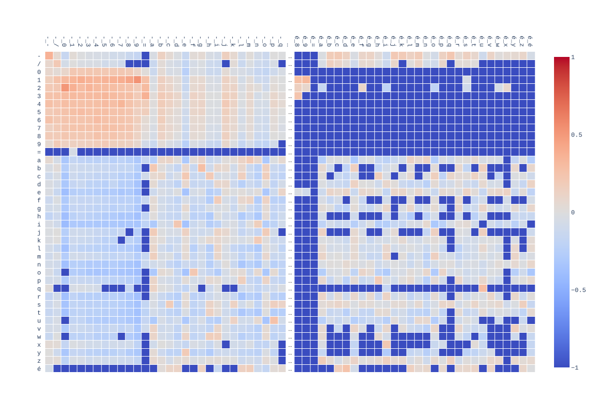
\(U\)
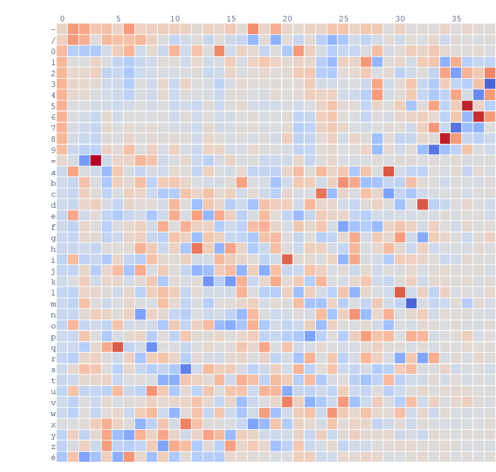
\(\Sigma\)
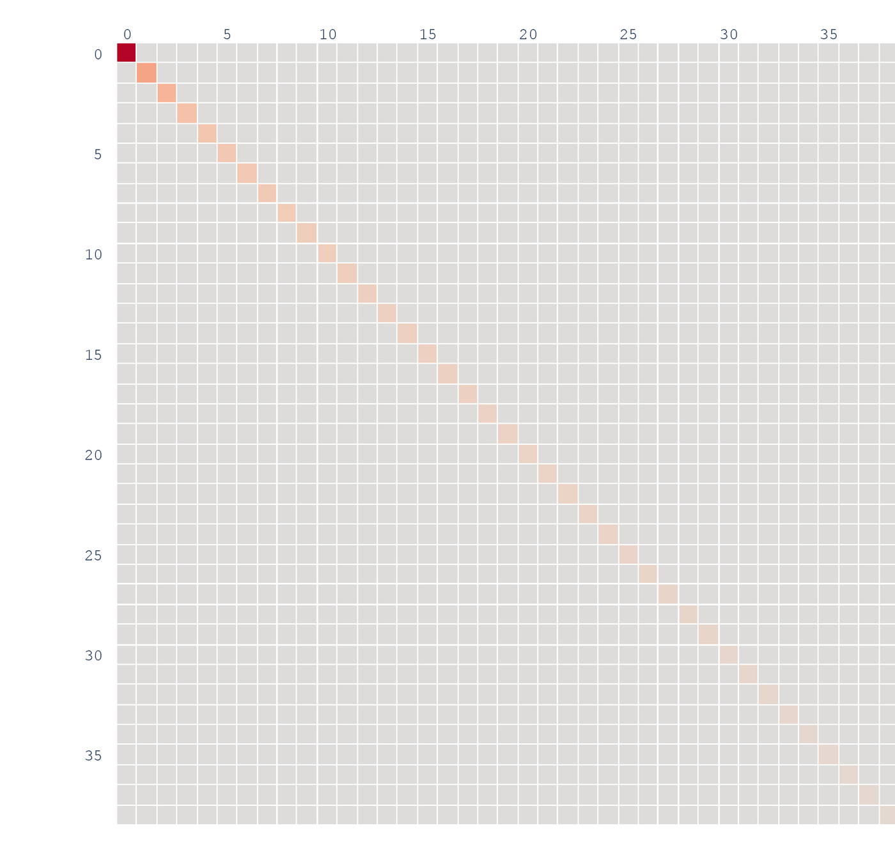
\(V^T\)
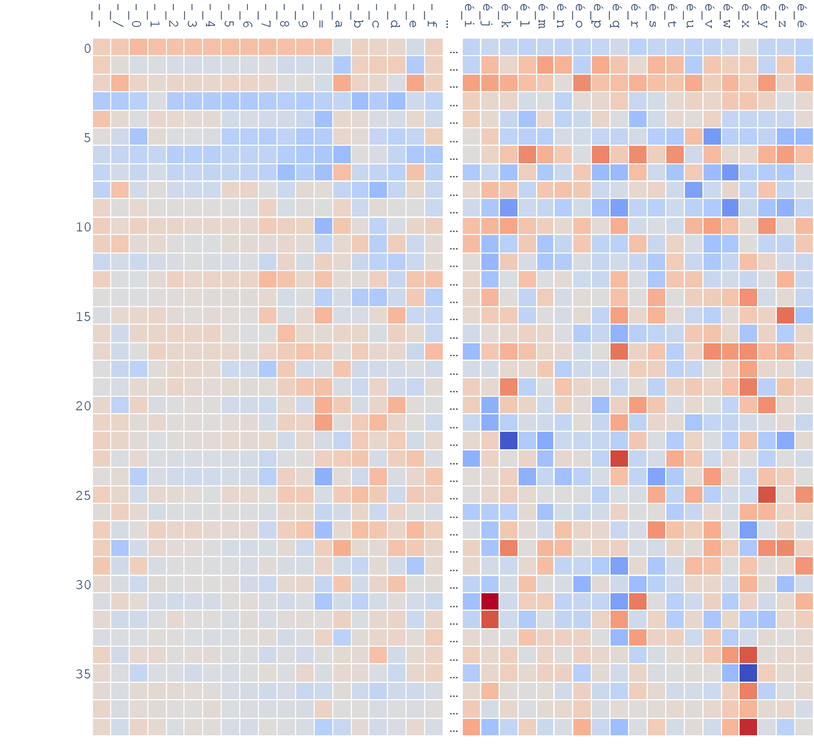
\(U \times \Sigma\)
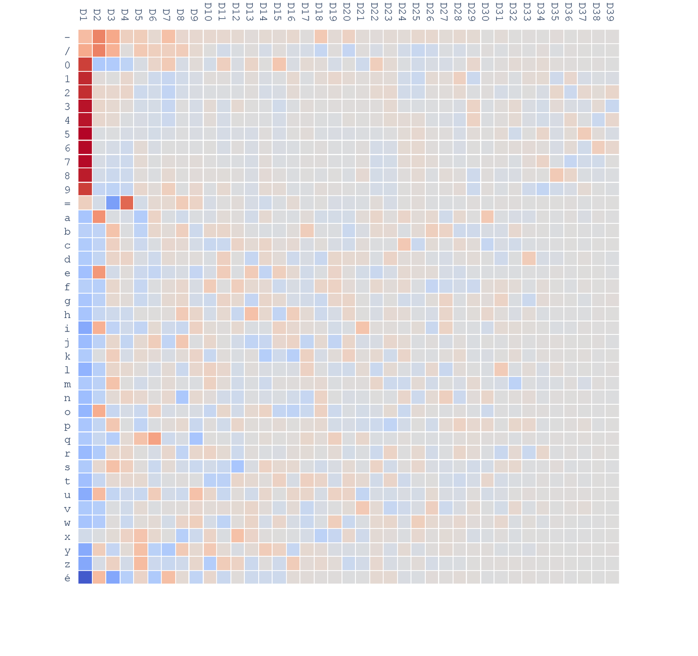
\(\hat{U} \times \hat{\Sigma}\)
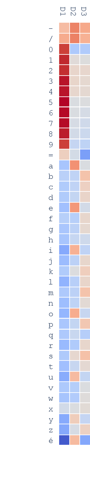
\(\hat{U} \times \hat{\Sigma}\)
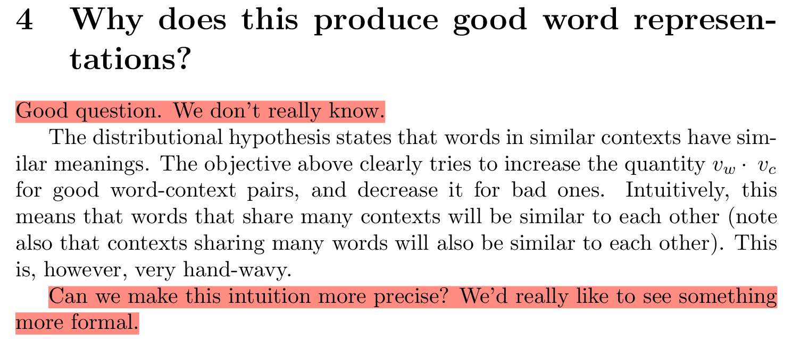
\(\color{red}{W} = \{\texttt{-},\texttt{/},\texttt{0},\texttt{1},\texttt{2},\texttt{3},\texttt{4},\texttt{5},\texttt{6},\texttt{7},\texttt{8},\texttt{9},\texttt{=},\texttt{a},\texttt{b},\texttt{c},\ldots,\texttt{w},\texttt{x},\texttt{y},\texttt{z},\texttt{é}\}\)
\(\color{blue}{C} = W \times W = \{\texttt{(-,-)},\texttt{(-,/)},\texttt{(-,0)},\ldots,\texttt{(é,z)},\texttt{(é,é)}\}\)
\[\begin{aligned} M \colon {\color{red}{W}} \times {\color{blue}{C}} &\to \mathbb{R}\\ ({\color{red}{w}},{\color{blue}{c}}) &\mapsto \mathrm{pmi}({\color{red}{w}},{\color{blue}{c}}) \end{aligned}\]
\[\begin{aligned} M_w \colon {\color{red}{W}} &\to \mathbb{R}^{\color{blue}{C}}\\ {\color{red}{w}} &\mapsto {\color{blue}{M(w,-)}} \end{aligned}\]
\[\begin{aligned} M_c \colon {\color{blue}{C}} &\to \mathbb{R}^{\color{red}{W}}\\ {\color{blue}{c}} &\mapsto {\color{red}{M(-,c)}} \end{aligned}\]
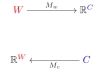
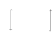
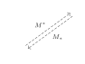
\(M^* \colon \mathbb{R}^{\color{red}{W}} \to \mathbb{R}^{\color{blue}{C}}\)
\(M_* \colon \mathbb{R}^{\color{blue}{C}} \to \mathbb{R}^{\color{red}{W}}\)
\({\color{red}{M_* M^*}} \colon \mathbb{R}^{\color{red}{W}} \to \mathbb{R}^{\color{red}{W}}\)
\({\color{blue}{M^* M_*}} \colon \mathbb{R}^{\color{blue}{C}} \to \mathbb{R}^{\color{blue}{C}}\)
\[\begin{aligned} \{{\color{red}{u_1}}, \ldots, {\color{red}{u_m}}\} &\subset \mathbb{R}^{\color{red}{W}}\\ \{{\color{blue}{v_1}}, \ldots, {\color{blue}{v_n}}\} &\subset \mathbb{R}^{\color{blue}{C}}\\ \{\lambda_1, \ldots, \lambda_{\min(m,n)}&, 0, \ldots, 0\} \end{aligned}\]
\({\color{red}{M_* M^* u_i}} = \lambda_i {\color{red}{u_i}}\)
\({\color{blue}{M^* M_* v_i}} = \lambda_i {\color{blue}{v_i}}\)
The \({\color{red}{u_i}}\) and \({\color{blue}{v_i}}\) are (linear)
fixed points!
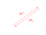
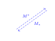
\[M = U\Sigma V^T \qquad \begin{aligned} U &:= [{\color{red}{u_1}}, \ldots, {\color{red}{u_m}}]\\ V &:= [{\color{blue}{v_1}}, \ldots, {\color{blue}{v_n}}]\\ \Sigma &:= \left[\begin{smallmatrix} \sqrt{\lambda_1} & \cdots & 0 \\ \vdots & \ddots & \vdots \\ 0 & \cdots & \sqrt{\lambda_r} \end{smallmatrix}\right] \end{aligned}\]
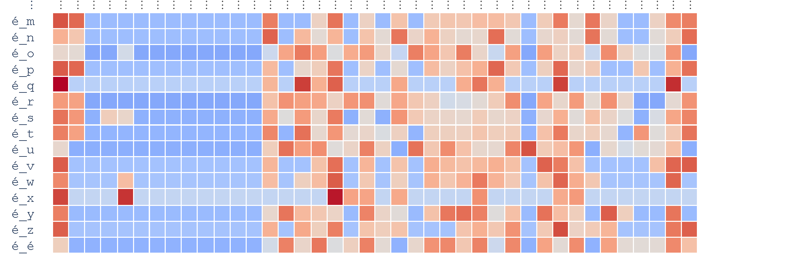
\(M^*\)
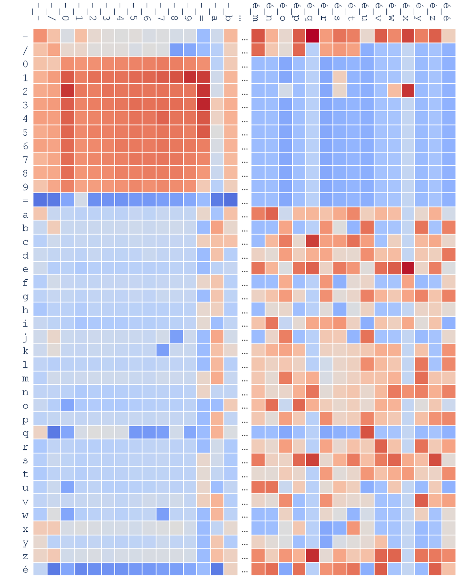
\(M_*\)
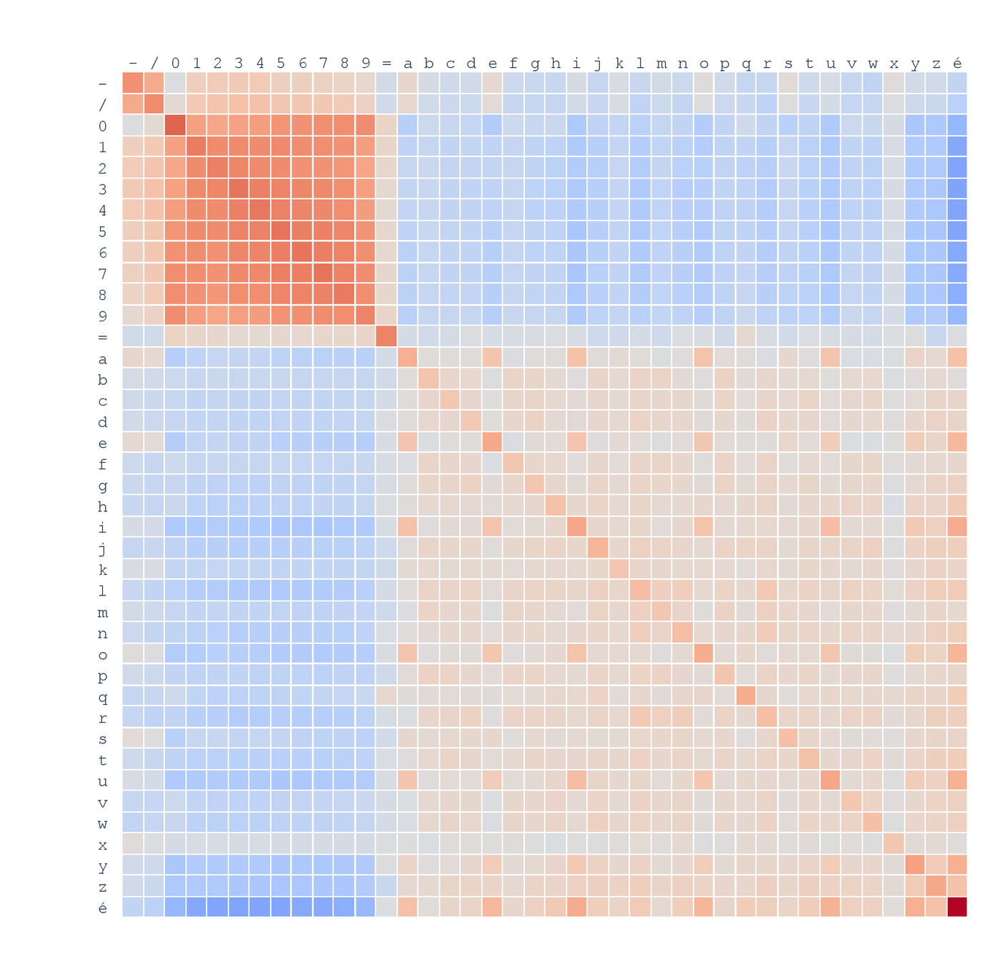
\({\color{red}{M_* M^*}}\)
\({\color{red}{M_* M^* u}} = \lambda {\color{red}{u}}\)
\(\times\)
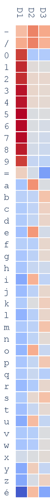
\(=\) \(\begin{bmatrix} \lambda_1 & \lambda_2 & \lambda_3 \end{bmatrix}\)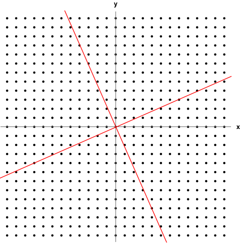
(credits: Jacopo Bertolotti, CC0
via Wikimedia Commons)
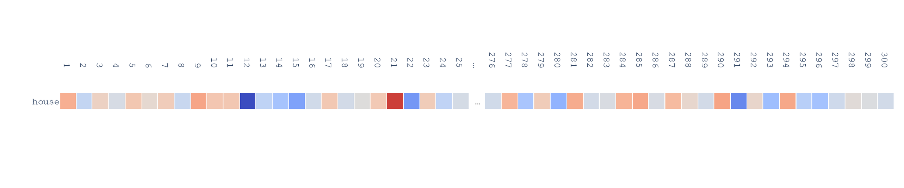
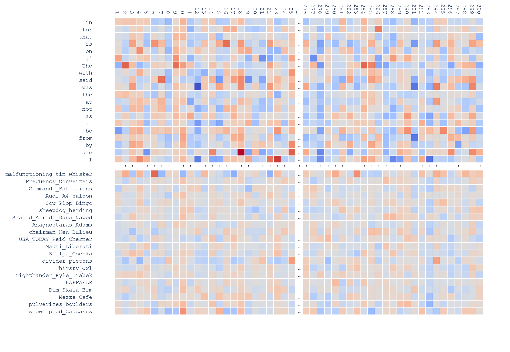
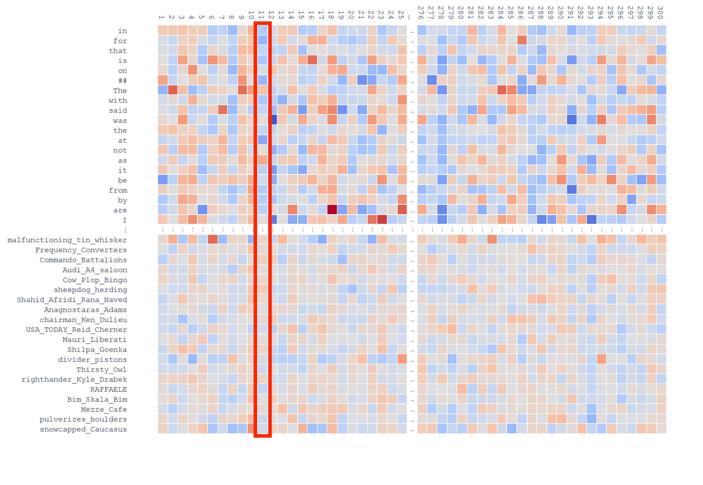
fixed point!
“One can conceive of a profoundly deaf human being who has never experienced sound or music; just as such a person will gaze in astonishment at the Chladnian sound-figures in sand, find their cause in the vibration of a string, and swear that he must now know what men call sound — this is precisely what happens to all of us with language.”
Eigenvectors of \({\color{red}{M_* M^*}}\):
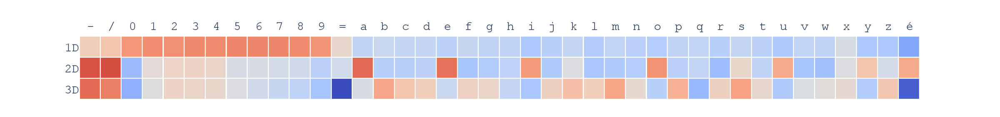
Eigenvalues of \({\color{red}{M_* M^*}}\) and \({\color{blue}{M^* M_*}}\):
Eigenvectors of \({\color{blue}{M^* M_*}}\):
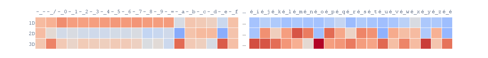
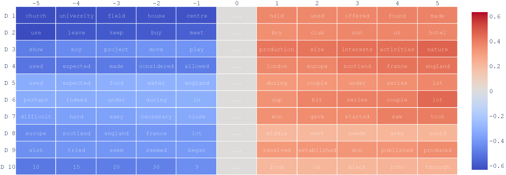
Anti-dogmaticity
AI performance does not rely on any substantive property of the models,
but only on the formal objects that models implicitly approximate
Conditionality
Those formal objects establish the strict conditions
under which models can operate
Limitedness
A formal analysis of current implicit conditions can show in which way they are limited,
and how they can be changed
In the past, the great difficulty has arisen from the qualitative nature of our studies. If they were to be treated quantitatively, it was either necessary to do a certain amount of juggling with them or to simplify to an excessive degree. Today, however, there are many branches of mathematics — set theory, group theory, topology, etc. — which are concerned with establishing exact relationships between classes of individuals distinguished from one another by discontinuous values, and this very discontinuity is one of the essential characteristics of qualitative sets in relation to one another and was the feature in which their alleged ‘incommensurability’, ‘inexpressibility’, etc., consisted.
Lévi-Strauss (1954)
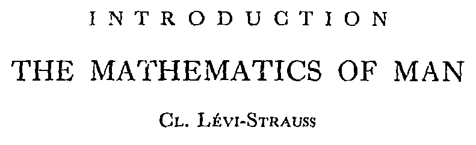
Derrida (1976)
“Within cultures practicing so-called phonetic writing, mathematics is not just an enclave. […] This enclave is also the place where the practice of scientific language challenges intrinsically and with increasing profundity the ideal of phonetic writing and all its implicit metaphysics (metaphysics itself)”
Deleuze (1994)
“Differential calculus is not the unimaginative calculus of the utilitarian, the crude arithmetic calculus which subordinates thought to other things or to other ends, but the algebra of pure thought, the superior irony of problems themselves — the only calculus ‘beyond good and evil’”
Foucault (2002)
“There is perhaps only one science for which one can neither distinguish these different thresholds, nor describe a similar set of shifts: mathematics […] Hence the fact that their establishment is both so enigmatic […] and so valid […]”
I am not sure how interesting it would be to attempt a redefinition of what was known, at the time, as structuralism. It would be interesting, though, to study formal thought and the different kinds of formalism that ran through Western culture during the 20th century. When we consider the extraordinary destiny of formalism in painting or formal research in music, or the importance of formalism in the analysis of folklore and legend, in architecture, or its application to theoretical thought, it is clear that formalism in general has probably been one of the strongest and at the same time one of the most varied currents in 20th century Europe. And it is worth pointing out that formalism has very often been associated with political situations and even political movements. It would certainly be worth examining more closely the relation of Russian formalism to the Russian Revolution. […] That is how I would situate the structuralist phenomenon: by relocating it within the broad current of formal thought.
(Foucault, in Raulet, 1983)
“The purpose of art, then, is to lead us to a knowledge of a thing through the organ of sight instead of recognition. By ‘enstranging’ objects and complicating form, the device of art makes perception long and ‘laborious’. The perceptual process in art has a purpose all its own and ought to be extended to the fullest. Art is a means of experiencing the process of creativity. The artifact itself is quite unimportant.”
Shklovsky (1990)
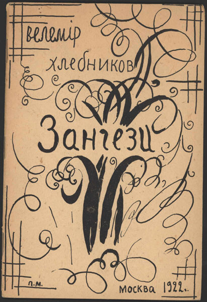
“If it is true […] that, first, the dominant class constitutes a relatively autonomous space whose structure is defined by the distribution of economic and cultural capital among its members, […] then these structures should be found in the space of life-styles […]. To endeavour to establish this, the whole set of survey data was subjected to correspondence analysis.”
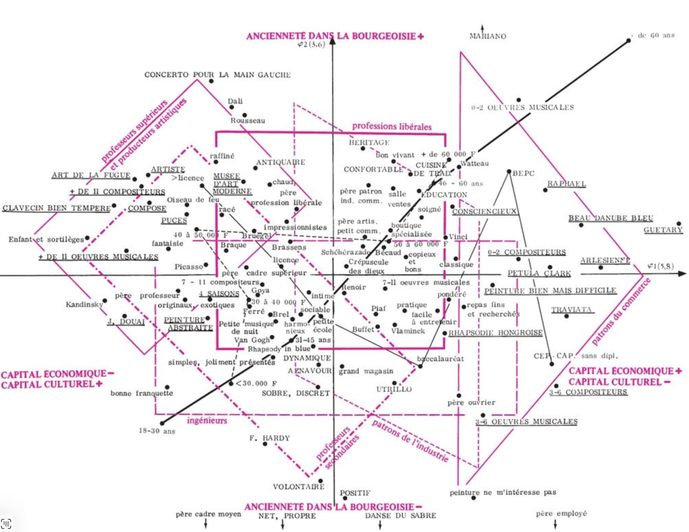
“…all peoples have just such a mathematically divided firmament of concepts above them […] Here, one can certainly admire humanity as a mighty architectural genius who succeeds in erecting the infinitely complicated cathedral of concepts on moving foundations, or even, one might say, on flowing water; admittedly, in order to rest on such foundations, it has to be like a thing constructed from cobwebs, so delicate that it can be carried off on the waves and yet so firm as not to be blown apart by the wind.”
Doesn’t formalism entail a risk of dogmatism?
Of course!
But dogmatic uses of critique are of little help against it.
Gastaldi, J. L. (2021). Why Can Computers Understand Natural Language? Philosophy & Technology, 34(1), 149–214. https://doi.org/10.1007/s13347-020-00393-9
Gastaldi (2021)
Gastaldi, J. L., & Pellissier, L. (2021). The Calculus of Language: Explicit Representation of Emergent Linguistic Structure through Type-Theoretical Paradigms. Interdisciplinary Science Reviews, 46(4), 569–590. https://doi.org/10.1080/03080188.2021.1890484
Gastaldi & Pellissier (2021)
Bradley, T.-D., Gastaldi, J. L., & Terilla, J. (2024). The Structure of Meaning in Language: Parallel Narratives in Linear Algebra and Category Theory. Notices of the American Mathematical Society.
Bradley et al. (2024)
Gastaldi, J. L., Jarvis, S., Seiller, T., & Terilla, J. (2026). Projective metric geometry of tropical nuclei: Gap matrices, event loci, and order chambers. https://arxiv.org/abs/2601.07900
Gastaldi et al. (2026b)
Gastaldi, J. L., Jarvis, S., Seiller, T., & Terilla, J. (2026). A calculus of types in isbell nuclei. https://arxiv.org/abs/2606.03369
Gastaldi et al. (2026a)
Gianni Gastaldi | Formalization Is the Limit